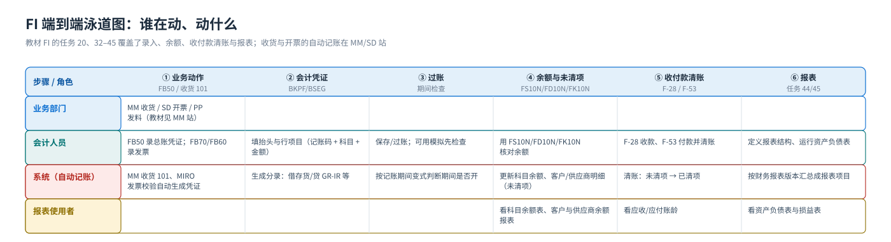

端到端流程
业务动作 → 会计凭证 → 过账 → 余额与未清项 → 报表（含记账影响）
FI 的端到端流程只有一句话：业务动作 → 会计凭证 → 过账 → 余额与未清项 → 报表。看这张泳道图时只盯两件事：每一步谁在动、产生什么凭证；哪一步才真正改变科目余额。
泳道图：谁在动、动什么
{kind=link}

教学建议先在黑板上画这条泳道，再让学生把教材任务往里填：任务 20（FB50 实收资本）、任务 32（FB70 客户发票）、任务 37（FB60 供应商发票）填「业务/会计录入」列；任务 21/36/41/42 填「看余额」列；任务 44/45 填「报表」列。填完就明白：FI 的手工动作很少，报表才是终点。
五步路线（每一步的 T-code 与产出）

| # | 动作 | T-code（教材任务） | 产生的凭证/对象 | 对余额的影响 | 对报表的影响 |
|---|---|---|---|---|---|
| 1 | 业务发生（收货 101 / 开票 VF01 / 手工记账 FB50） | FB50（任务 20）· MM/SD 侧自动 | 会计凭证（可能还带物料凭证/发票凭证） | 凭证保存后过账即更新科目余额与未清项 | — |
| 2 | 系统按配置找科目（科目确定） | 后台配置（OBYC / 收入科目 / 税码） | 凭证行项目的借贷方科目 | 决定记到哪个科目 | — |
| 3 | 过账（Posting） | 保存时自动执行 | 凭证状态 = 已过账，得到凭证号（来自号码范围，任务 15） | 这一步才改余额；预制凭证不改 | — |
| 4 | 看余额与明细 | FS10N（任务 21）· FD10N（任务 36）· FK10N（任务 41） | 科目余额 / 客户供应商余额 / 未清项 | 读余额（不改） | 科目余额表 S_ALR_87012276（任务 42） |
| 5 | 收付款与清账（应收应付循环） | F-28 收款（任务 33/34）· F-53 付款（任务 39） | 会计凭证；把未清项变已清项 | 减少应收/应付余额 | 客户余额报表 s_alr_87012172 / 供应商 s_alr_87012082（任务 35/40） |
| 6 | 期末与报表 | S_ALR_87003642 期间开关（任务 18）· 任务 44/45 | 报表结构（财务报表版本）、资产负债表与损益表 | 期末结转（留存收益 410901） | 资产负债表 / 损益表（任务 45） |
记账影响：教材里的科目与分录（课堂上抄这三张就够）
| 业务动作 | 凭证类型（标准） | 借方 | 贷方 | 教材画面/任务 |
|---|---|---|---|---|
| 收到实收资本 2.800,00 | SA 总账凭证 | 10020101 银行存款-工行 / 中行 | 31010101 实收资本 | 任务 20（FB50 录入、FB03 回查，凭证 100000000） |
| 卖给客户（含税 58.000） | DR 客户发票 | 客户 10000000（→ 统驭科目 11310101 应收账款） | 收入 51010101 + 销项税 21710102 | 任务 32（FB70；FD10N 显示期间 3 借方 58.000） |
| 收到客户全额/部分还款 | DZ 客户收款 | 银行存款 10020101 | 客户（冲减应收账款） | 任务 33/34（F-28；部分收款时用「剩余项目」） |
| 收到供应商发票 | KR 供应商发票 | 费用/存货/GR-IR 科目 + 进项税 21710101 | 供应商（→ 21210101 应付账款） | 任务 37/38（FB60 + 模拟） |
| 向供应商付款 5.600,00 | KZ（教材画面） | 供应商 30000002 京通运输公司（冲减应付） | 银行存款 10020101（画面显示 0010020111） | 任务 39（F-53；凭证期间 3 / 财年 2021） |
| MM 收货（101） | 自动（WE） | 存货 12430101 等 | 材料采购-GR/IR 12010101 | MM 站详解；FI 侧只看到凭证 |
| MM 发票校验（MIRO） | 自动（RE） | 材料采购-GR/IR 12010101 | 供应商 21210101 应付账款（+ 进项税） | MM 站任务 39 |
| 年结结转损益 | 自动结转 | 损益类科目（51010101…55029101）依次结平 | 留存收益科目 410901 | 任务 09 定义留存收益科目；任务 44 的 P&L 结果项目 |
一句话记住 FI 的核心公式
科目余额 = 凭证行项目之和：余额不是「维护」出来的，是过账累积出来的。所以课堂上遇到「余额不对」时，永远按这个顺序查：① 凭证有没有过账（是不是预制）；② 是不是记错科目/公司代码/期间；③ 是不是被清账/冲销了。
看明细用 FBL3N（总账）/ FBL5N（客户）/ FBL1N（供应商），教材未演示这三支，但项目上几乎天天用。
一笔业务走完全程（把教材的号码串起来）
- 收到实收资本：
FB50录凭证 → 过账得到凭证号100000000→FB03看到 借 10020101 / 贷 31010101 各 2.800,00（任务 20）。 - 建好客户与收入科目：
FD01建客户 10000000 远东造船厂（统驭科目 11310101）（任务 29）；收入科目 51010101 设成「只能自动记帐」（任务 43）。 - 开客户发票：
FB70录入含税 58.000 的发票（任务 32）→ 客户余额增加；FD10N显示期间 3 借方 58.000,00（任务 36）。 - 收款清账：
F-28做全额收款（任务 33）或部分收款 + 剩余项目（任务 34）。 - 应付侧：
FB60录供应商发票（任务 37）→ 模拟检查（任务 38）→F-53付款 5.600,00（任务 39）→FK10N看供应商余额（任务 41）。 - 期末：
S_ALR_87003642看/改期间开关（任务 18）→S_ALR_87012276科目余额表（任务 42）→ 定义报表结构（任务 44）→ 运行资产负债表（任务 45，资产 223.680 / 权益 223.680，本年利润 220.880）。
顺序错误会怎样（教学现场真实会遇到的）
| 做错的事 | 系统的反应 | 正确做法 |
|---|---|---|
| 公司代码没分配科目表就想建科目 | FS00 里科目表/字段状态组是空的或直接报错 | 先做任务 05（公司代码全局参数：科目表 A999） |
| 科目只建了科目表层 | 凭证能选到科目，一过账报「未在公司代码下维护」 | 用 FS00/FSS0 补公司代码层（字段状态组、统驭科目） |
| 客户/供应商没维护统驭科目 | 过账报错或明细不进总账 | 在客户/供应商的公司代码层填 11310101 / 21210101（任务 29/31） |
| 期间已关闭还要过账 | 报「期间已关闭」 | 任务 18 前台把该期间打开（+/A/D/K/K 控制），或改过账日期 |
| 收入科目手工记 SA 凭证 | 被拒（只能自动记帐） | 这正是任务 43 的目的；正规做法是让 SD 开票自动生成 |
| 凭证只预制没过账就想看余额 | FS10N 查不到这张凭证的金额 | 把预制凭证过账（FBV0，教材未演示）或直接保存过账 |
| 报表数字不平 | 资产负债表资产 ≠ 负债 + 所有者权益 | 查留存收益科目（任务 09）与报表项目科目范围（任务 44） |
教材画面（流程主线）